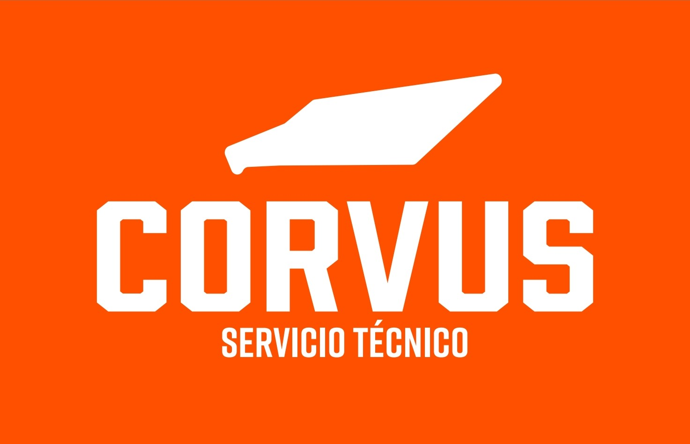
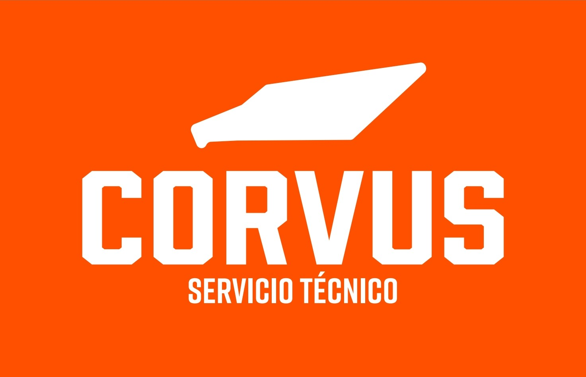

¡Bienvenido a Talleres Hidromecánicos y móviles VEMO S.C.!
En Talleres Hidromecánicos y móviles VEMO S.C., nos dedicamos a trabajar con todo tipo de maquinaria. Con un enfoque en destacar los aspectos principales como la innovación, la calidad, el compromiso con el cliente, nos esforzamos por mejorar la vida de las personas y ofrecer soluciones tecnológicas.
Nuestros servicios incluyen:
- Manejo de maquinas a tu disposición
- Mantenimiento de las mismas
- Taller con todo tipo de herramientas para cualquier tipo de problema
Trabajamos con un equipo de profesionales altamente capacitados y comprometidos con la excelencia en cada proyecto que emprendemos. Nuestra experiencia y pasión nos permiten ofrecer soluciones efectivas y adaptadas a las necesidades específicas de cada cliente.
¿Por qué elegirnos?
- Trato excelente con nuestros clientes
- Trabajamos con las mejores marcas en maquinaria
- Entrega de maquinaria a tiempo
En Talleres Hidromecánicos y móviles VEMO S.C., creemos en la importancia de la integridad, la innovación, el trabajo en equipo. Nos esforzamos por establecer relaciones sólidas y duraderas con nuestros clientes, basadas en la confianza mutua y el éxito compartido.
Nuestro Compromiso
- Satisfacer a nuestros clientes
- Cumplir con nuestro trabajo al 100%
- Adaptarnos a cada adversidad
En Talleres Hidromecánicos y móviles VEMO S.C., estamos comprometidos con la empresa, como la sostenibilidad, la responsabilidad social, la calidad. Nos esforzamos por hacer una diferencia positiva en el mundo y contribuir al desarrollo de la sociedad.